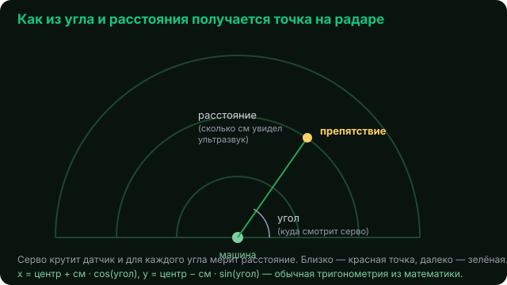

"D,угол,см" и нарисовать из неё радар: точки-препятствия
вокруг машины, как на экране подводной лодки.
Сначала просим машину качать датчиком: car.send("SCAN,1"). Дальше каждый кадр
читаем строку и разбираем её на угол и расстояние:
line = car.read() # напр. "D,90,40" или None if line and line.startswith("D,"): parts = line.split(",") # ["D", "90", "40"] angle = int(parts[1]) cm = int(parts[2]) blips.append([angle, cm]) # запомнили точку
Угол говорит, куда смотрел датчик, расстояние — как далеко препятствие. Точку на экране находим тригонометрией (та самая из математики, синус и косинус):

import math x = CX + d * math.cos(math.radians(angle)) y = CY - d * math.sin(math.radians(angle))
Близкие препятствия красим красным, далёкие — зелёным. Запусти radar.py — можно одновременно рулить стрелками и смотреть радар.
car_link выдаёт телеметрию понарошку — впереди «стена». Поэтому
радар крутится и оживает, даже если машина не подключена. Удобно отлаживать рисование.